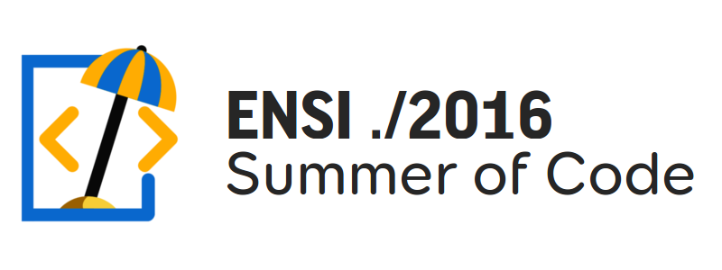
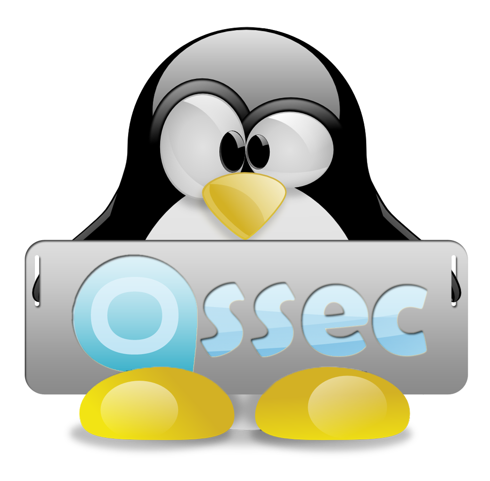
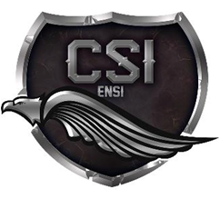

Présentation de compétition
ENSI Summer of Code (EsoC) est un challenge de programmation pendant l'été. Son objectif est la motivation des élèves de l'ENSI pour développer et partager des projets open source de haute qualité. Le challenge comporte deux compétitions, l'une pour les avancés et l'autre pour les débutants. Vérifiez les exigences, les règles et rejoignez cette expérience enrichissante.
→Compétition des avancés
La compétition avancée est destinée à ceux ayant des expériences en programmation. Les candidats sont tenus de faire une de ces tâches:
- Contribuer de manière significative à un projet open source.
- Construire leur propre projet open source et mener son développement.
Les participants doivent faire attention à ces directives durant le développement de leurs projets pour améliorer leurs chances de gagner:
- Fonctionnel et utile
- Code facile à lire
- Développement piloté par des tests
- Beaux à voir / utilisable
- Documenté
→Compétition des débutants
Le concours des débutants est une compétition destinée à ceux qui veulent apprendre et expérimenter de nouvelles technologies. Pour participer, vous devez accomplir l'une de ces tâches:
- Utiliser les technologies open sources les plus branchées dans votre projet d'été.
- Développer des mini-projets en procédant à des technologies open sources.
Les participants doivent faire attention à ces directives tout en développant leurs projets pour améliorer leurs chances de gagner:
- Idées innovantes
- Code facile à lire
- Nouvelles technologies
- Utilisation de git
→Règles et éxigences
Pour participer, vous devez satisfaire les conditions suivantes . Une fois accepté , vous devez suivre les règles suivantes:
- Vous devez être un étudiant de l' ENSI.
- Le nombre des membres d’une équipe ne doit pas dépasser deux personnes.
- Vous devez faire un effort personnel , copier - coller tout peut vous disqualifier.
- Vous devez nous informer de votre avencement en envoyant des pull requests , sinon vous ne vous pouvez être disqualifié .
→Procédure d'inscription
Pour participer au défi , veuillez suivre la procédure suivante :
- Remplissez ce formulaire en expliquant le sujet de votre projet. Si vos réponses satisferaient les exigences , votre demande sera acceptée.
- Un dépôt pour votre projet sera ajouté à la page Github de ESoC2016.
- Pour démarrer veuillez faire un "fork" du dépôt en utilisant votre compte github personnel.
- Chaque fois que vous faites un avancement , vous envoyer une pull request au dépôt que nous avons créé . Cela nous permettra de se tenir au courant de votre avancement.
→WTF is Github? / Questions
Git et GitHub sont très faciles à apprendre et à utiliser, veuillez consultez les liens suivants:
- HTG, What Is GitHub and What Do Geeks Use It For?
- Got 15 minutes and want to learn Git?
- Git - the simple guide
Si vous avez des questions à poser ou des commentaires, vous pouvez contacter une de personnes suivantes:
- Wafa Yahyaoui [wafayahyaoui9@gmail.com]
- Soumaya Zammit [zammitsoumaya@gmail.com]
- Tewfik Ghariani [ghariani.tewfik@gmail.com]
- Ramzi Hmaidi [ramzi.hmaidi@ensi-uma.tn]
- Mohammed Amine Kaabachi [amine.kaabachi@gmail.com]
→À Propos
La compétition est organisée par CSI ENSI et OSSEC. Si vous voulez faire partie de l'organisation ou nous sponsorisez, veuillez contacter un des personnes indiquées ci-dessus.
- 
- 